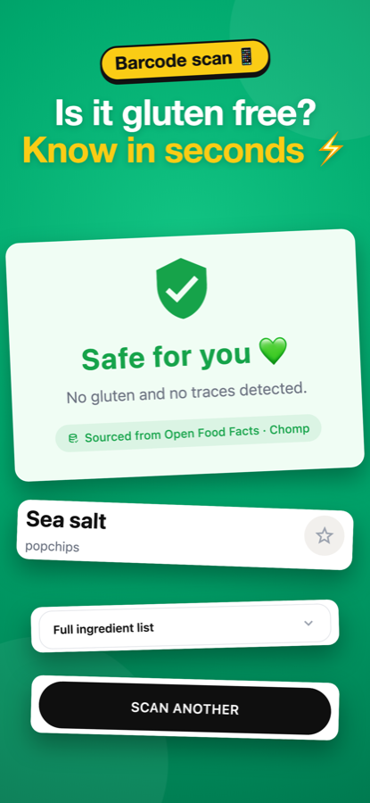
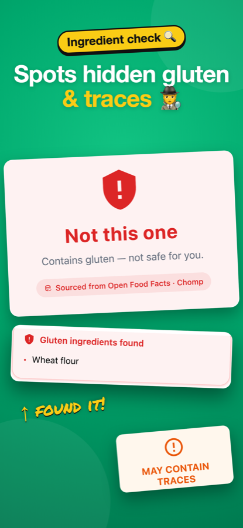
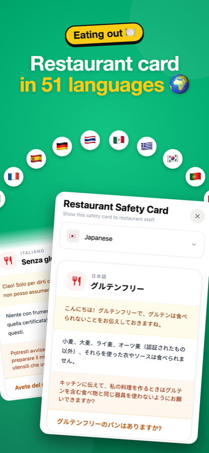
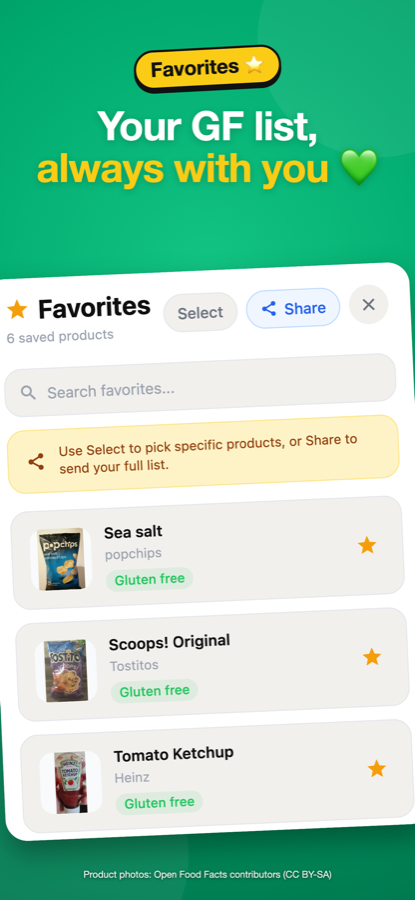

Scan a barcode at the shop and see if it's gluten free, with the ingredients that matter highlighted. Travelling? Show a restaurant card in the local language.
Download on the App StoreFree download. On the App Store, search "Is It GF".

Built for people with coeliac disease and anyone eating gluten free.

Scan the barcode, or snap the label if there isn't one. Wheat, barley, rye and "may contain" warnings are pulled out for you.

Show the kitchen exactly what you can't eat, in their language.

Save your finds and share the list with family before they shop for you.
Restaurant cards in 51 languages tell the kitchen exactly what you can't eat, politely, in their language.
Choose the country you're in.
The card explains gluten and cross-contact.
Ask the questions that matter, like "Do you have gluten free bread?"
Country guide: Mexico 🇲🇽 · Japan 🇯🇵 · France 🇫🇷 · Brazil 🇧🇷. Watch more countries on YouTube and TikTok. Read how labelling works in eight countries.
How gluten-free labelling works in the places people shop and travel. Local words, symbols and what to check on the pack.
Free download. Premium adds Offline Mode and Scan History, with no ads.
Get Is It GF? on the App Store